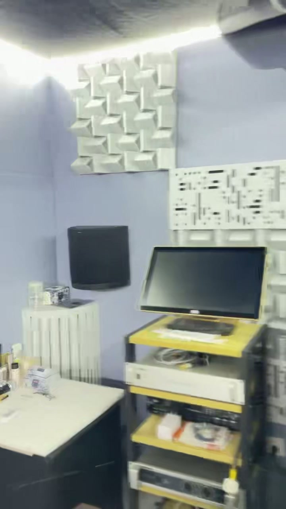
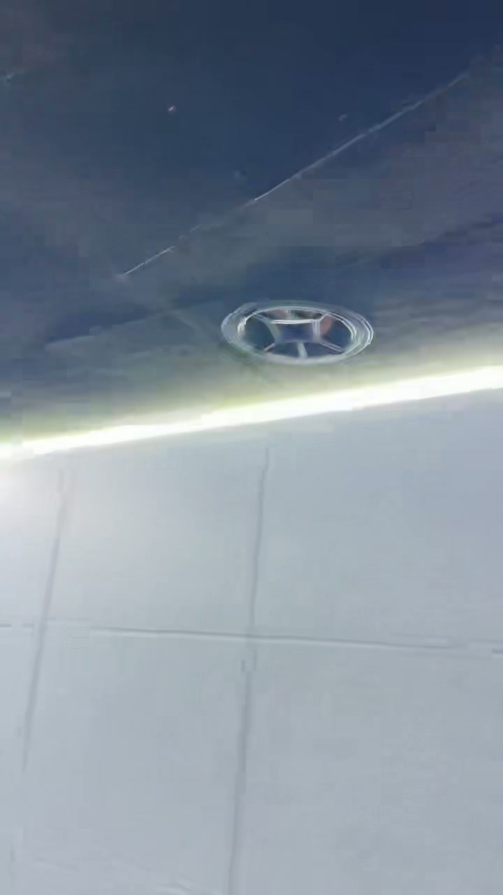
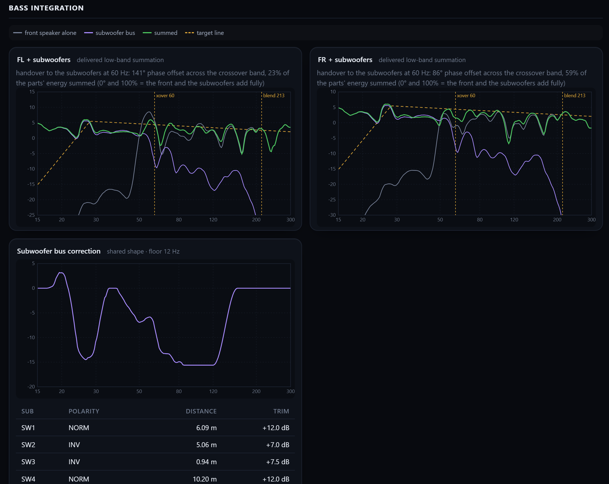

REW
逐只测音箱、单炮和四炮
先看房间有什么问题全椒视听室 / 测量与调整
先把声音经过的路径和相加的结果查清楚。
全椒视听室
01
两套测量都有偏弱迹象
02
随位置变化，主箱与炮仍需复测
03
测量时已有一只单元故障
房间 / 设备与测点
示意按已确认尺寸；箱体、门和高度仍含估值。
面向幕布认左右；门、箱体与环绕位置为约示，非施工定位图。
测量方法 / 先摸底再校准
REW先了解现场；GSonic正式采集；Evo32计算调整方案。
逐只测音箱、单炮和四炮
先看房间有什么问题正式记录各声道、多测点
给后续计算提供数据计算电平、时间、分频和滤波
把方案用于功放，再复测数据质量 / 哪些能用
文件和重复性支持继续分析；不能据此说所有音箱健康。
15 路 × 6份 = 90份
未见数字满幅削波；不等于没有模拟限幅或硬件失真。
两次测量 / 看共同现象
两次测位和处理口径不同，先比较声音的走向。
以各自500–2000Hz作参考
REW原始GSonic原始 只比较形状，非绝对声压。
房间模态 / 尺寸与边界
边界假设改变，算出的频率也会变；不能只找一根最近的线。
理想矩形模型 · 轴向前两阶
按声速343m/s计算。尺寸能提示候选频段，不能独自证明某个实测峰谷的原因。
房间模态 / 位置变化
同一只低音炮，测量点前后移动25厘米，有些低音会变强，有些会变弱。
按房间尺寸看强弱分布
现场实测 / SW1左前炮
三条曲线使用同一参考声学结构 / 五面薄板
四墙与顶面大量使用12mm聚酯板，顶面另有空腔。

现场既有大片薄板，也有局部立体/开孔构件。
是否吸收过多，要测分频段衰减。
满铺面积不等于40–80Hz已经控制。
声学结构 / 吊顶与反射
18cm空气层没有填棉；地面和幕前器材仍值得检查。

现场顶面；内部空气层与无填棉情况由业主确认。
可能改变吸收频段，深低频效果未验证。
晚约2.6ms；位置还不能锁定。
校准做了什么 / 声道配合
声道电平、到达时间、分频与滤波，分别解决不同问题。
| 输出 | 声道 | 本次分频 |
|---|---|---|
| FL / FR | 左右主箱 | 60 Hz |
| C | 中置 | 80 Hz |
| SLA / SRA | 侧环绕 | 80 Hz |
| SBL / SBR | 后环绕 | 60 Hz |
| TFL / TFR | 前天空 | 120 Hz |
| TRL / TRR | 后天空 | 110 Hz |
四只低音炮 / 最终参数
这些是本次输出参数；数字不能单独证明炮的能力或实际效果。
| 编号 / 位置 | 极性 | 等效距离 | 电平Trim |
|---|---|---|---|
| SW1 左前 | 正常 | 6.09 m | +12.0 dB |
| SW2 右前 | 反相 | 5.06 m | +7.0 dB |
| SW3 右后 | 反相 | 0.94 m | +7.5 dB |
| SW4 左后 | 正常 | 10.20 m | +12.0 dB |
本次配合方案，需用合成复测验证。
核对炮端链路与余量，不直接再加旋钮。
软件预测 / 主箱与炮的衔接
Review是计算预测；绿色总和仍有起伏。
交接频带相位汇总指标
相对好一些，仍需复测
主箱支路 → 炮组支路 → 同时工作
看相加处有没有变强
原图局部：灰为主箱，紫为炮组，绿为预测总和，黄虚线为目标；可点击打开原图。
当前结果 / 完成到了哪一步
两种模式都有听感反馈；没有写入后客观曲线，不能画成“已达标”。
01
问题和位置变化已有记录
已有记录02
有调整，也有未满足的低频检查
仍有未满足检查03
Reference、Flat均仍觉高频无力、低频不足
仍需客观复测低频检查未全部满足
目标1dB/oct仅1个位置参与该项估计
没有写入后频响/衰减验收曲线
前三KL650 / 实验室与现场
以500–2000 Hz作参考
点按曲线，可查看对应频率的相对电平。
前三高频 / 原因排查
目前有线索，没有一项已被证明是唯一原因。
检查幕布与背衬路径。
左右未内倾；水平、垂直分别查。
核对三只本体、号角/接线与指向。
低频听感 / 先查哪一段
4只21寸是配置，连续的频带与有效相加才是要测的结果。
REW校正前 · 四炮记录
相对自身80–120Hz40–50Hz相对80–120Hz频带约低17.2dB；只说明本记录的形状。
声学处理 / 先试再施工
按测量结果选位置，不先整屋拆板或整顶填棉。
选一处反射区域做可逆覆盖对照
同时听清晰度、测早反射先试座位、炮位与有效相加
再设计有针对性的低频结构查结构、测衰减，再选局部处理
一次只变一个条件下一次现场 / 按顺序验证
每一步保留设置和曲线，避免改完以后说不清是什么起作用。
手机建议横屏观看；讲解与图表同步，手动操作后可恢复跟随。